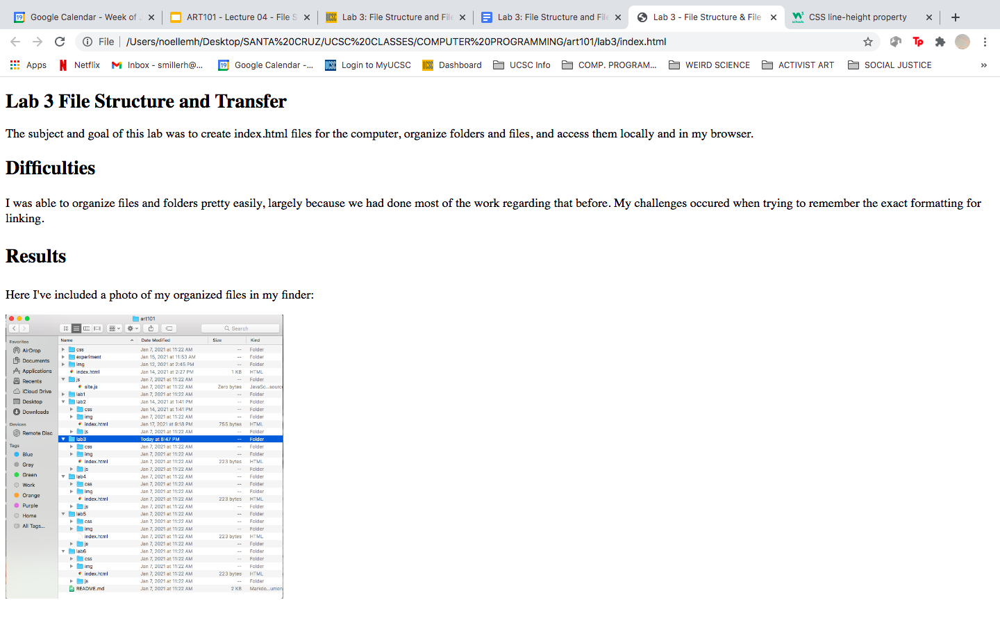
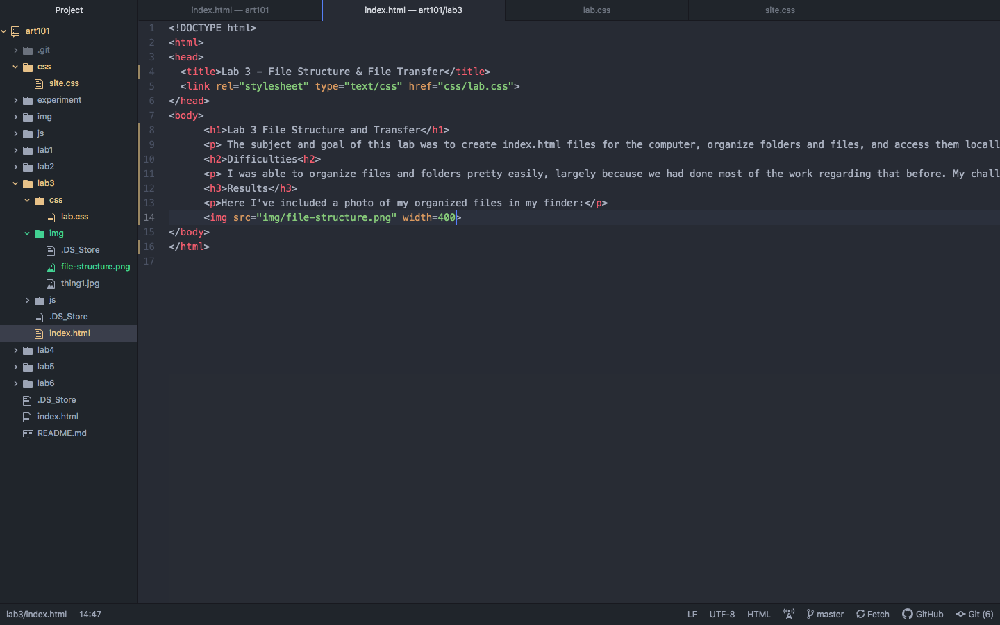
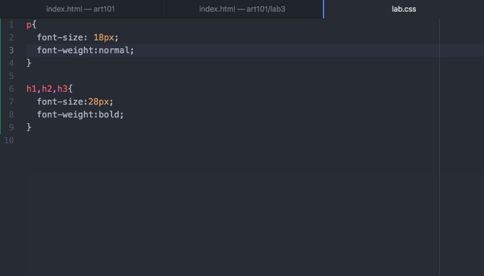

The subject and goal of this lab was to create index.html files for the computer, organize folders and files, and access them locally and in my browser.
I was able to organize files and folders pretty easily, largely because we had done most of the work regarding that before. My challenges occured when trying to remember the exact formatting for linking.
Above I've included a photo of my organized files in my finder,
an image of my website in the browser,
a picture of my html source code,
and my final photo, an image of my css code.